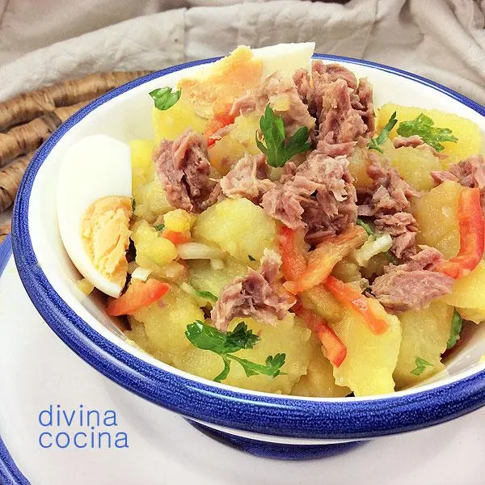

Papas aliñás
Papas aliñás
Ingredientes
- Papas - 5 ud
- Tomate - 1 ud
- Cebolla - 1/2 ud
- Pimiento - 1 ud
- Atún - 2 latas
- Sal - al gusto
- Aceite - 2 cda
- Vinagre - 1 cda
Preparación
- Cocemos las patatas durante 30 minutos (Si están trozeadas, sino puede tardar hasta una hora)
- Picamos los ingredientes; el tomate, la cebolla y el pimiento
- Añadimos el atún
- Lo mezclamos todo en el bol
- Aliñamos al gusto
Alérgenos
Información Nutricional
PROPORCIÓN MACRONUTRIENTES
| KCal (Por cada 100): |
80 KCal |
| PROTEINAS: |
5gr |
| HIDRATOS: |
15gr |
| GRASAS: |
5gr |
INFORMACIÓN MACRONUTRIENTES
| INGREDIENTE |
CANTIDAD |
PROTEÍNA |
HIDRATOS |
GRASA |
CALORÍAS |
| 5 PATATAS |
440gr |
8gr |
60gr |
1gr |
300Kcal |
| 1 TOMATE |
|
|
|
|
|
| 1/2 CEBOLLETA |
1 PIMIENTO |
ATÚN |
SAL |
ACEITE |
VINAGRE |